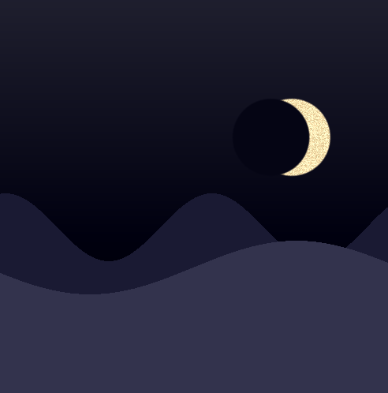

In diesem Praktikum wollen wir zunächst im Canvas zunächst einen Horizont darstellen.
Diese Darstellung wird dann um einfache (wiederholende) Bergstrukturen sowie einen
Mond erweitert. Das Ergebnis soll dann in etwa wie die folgende Grafik aussehen:

Die folgenden Aufgaben setzen voraus, dass Sie die zugehörigen Vorlesungmaterialien vollständig durchgearbeitet haben: Vorlesung 2
Sie müssen den zugehörigen Vorbereitungstest erfolgreich absolviert haben (siehe Lernraum).